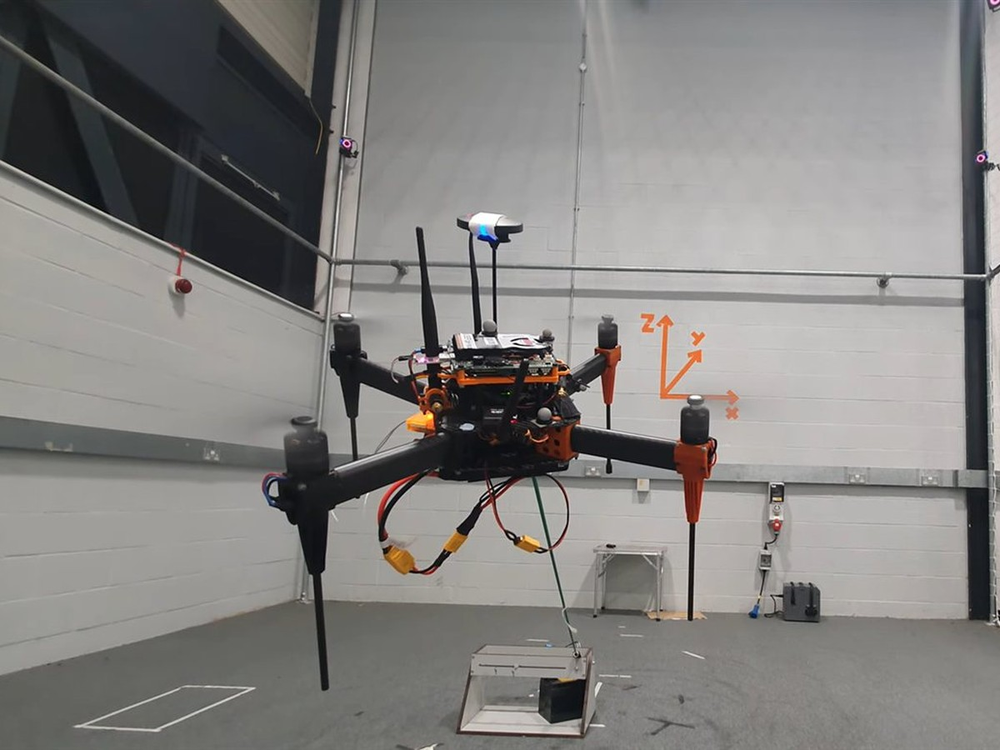
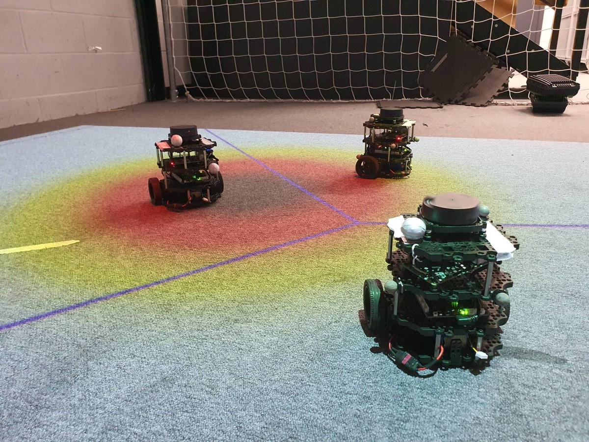
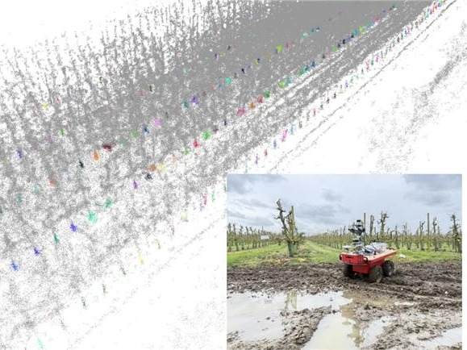
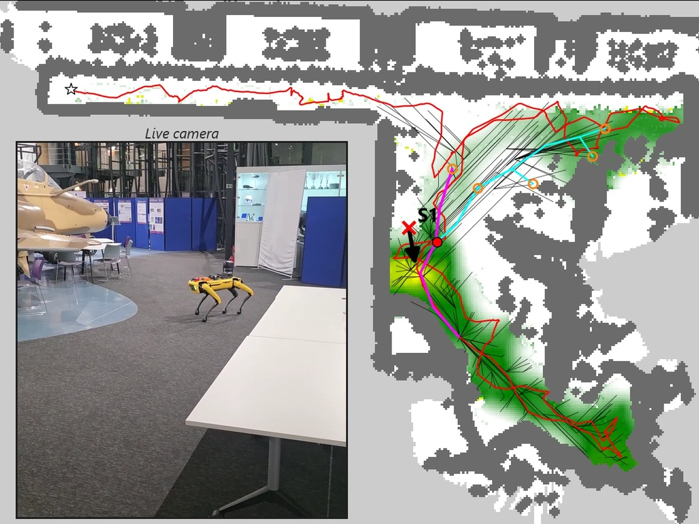

Loughborough University Centre for Autonomous Systems
Autonomous systems and mobile robotics research
Control, navigation, robotic perception and machine learning for autonomous aerial and ground vehicles, taken from theoretical foundations to field deployment with our industrial partners.
LUCAS is a specialised research group focusing on autonomous systems and mobile robotics, spanning control theory, navigation, robotic perception and machine learning, from theoretical foundations to field deployment. Comprised of both students and research professionals, LUCAS has strong links to many industrial partners and primarily works on research for unmanned applications.
In addition to industry-backed research, a large part of LUCAS is post-graduate study, allowing for investigation into areas not currently commercially explored. We are part of the Department of Aeronautical and Automotive Engineering.
Research in LUCAS is of a significant interdisciplinary nature across engineering, computer science, transport, agriculture and the environment.

Advanced automation and control
Control theory and automation for autonomous aerial and ground vehicles, taken from theoretical foundations through to deployment on real platforms with our industrial partners.

Estimation, tracking and decision-making
Estimation, multi-target tracking and sequential decision-making under uncertainty, for single robots and multi-robot teams, supporting situational awareness and autonomous operations.

Perception, machine learning and AI
Robotic perception, computer vision and machine learning for localisation, mapping and semantic segmentation in challenging real-world settings such as orchards and crop fields.

Robotic information gathering
Autonomous exploration and mapping of environmental signals such as gas (CBRN) releases, with robots that consider both information and exploration objectives along each trajectory.
Projects
Current flagship projects
A selection of the largest live research programmes at LUCAS, spanning doctoral training, precision agriculture and industry field deployment.
Horizon Europe · EPSRCMSCA Doctoral Network 2025 – 2029
AIGreenBots: Artificial Intelligence and Sensor-Fusion Systems in Sustainable Robotics for Precision Agriculture
A European doctoral network training the next generation of researchers in artificial intelligence and sensor fusion for sustainable agricultural robotics. The Loughborough award is funded through the EPSRC Horizon Europe guarantee, with Prof. Cunjia Liu as principal investigator.
Innovate UK · Defra£4.4m consortium 2023 – 2027
POME: Precision Orchard Management for Environment
Digitally scanning fruit trees in fine detail to generate precision dosing maps for blossom and fruit thinning, fertiliser, growth regulation and crop protection, together with more accurate yield forecasts for growers. LUCAS contributes the robotics and autonomy expertise behind the in-orchard platforms.
Consortium: led by Hutchinsons, with Antobot, Outfield, Fotenix, NP Seymour, University of Kent and Loughborough University.
Innovate UK · Defra£1.5m consortium 2023 – 2026
AREA-H: Accelerating Robotics and Embedding Autonomy in Horticulture
Developing a horticulture-specific robotic autonomy system: robust navigation from low-cost sensors, safe operation alongside human workers, and integration with existing growing infrastructure to future-proof horticulture businesses.
Consortium: led by Antobot, with Dogtooth Technologies, Haygrove, Clock House Farm and Loughborough University.
Welcome: Dr Boliang Cai joins LUCAS as a Research Associate working on agricultural robotics projects, having graduated from Cardiff University.
Oct 2025
Welcome: Dan Rowland and Yuchuan Jin join LUCAS as PhD students, working on information gathering and intelligent navigation for autonomous robots in agricultural scenarios.
Event: Loughborough University hosts the 30th International Conference on Automation and Computing (ICAC 2025), 27 – 29 August 2025, with Prof Cunjia Liu as General Chair.
Project: New Horizon Europe project AIGreenBots, funded by the MSCA Doctoral Network programme, has kicked off.
Oct 2024
Welcome: Zhipeng Zhong joins LUCAS as a PhD student, working on autonomous ground robotics for horticulture applications.
25 Apr 2024
Report: Prof Michael Ruderman from University of Agder, Norway, gives us a talk.
17 Apr 2024
Report: Prof Ying Tan from University of Melbourne, Australia, gives us a talk.
Apr 2024
Welcome: Dr Shuoyuan Xu joins LUCAS as a Research Associate working on agricultural robotics projects.
26 Mar 2024
Congratulations: Best Paper Prize at IEEE ICIT 2024: “A Formal Finite-control-set control approach for PMSM drives under disturbances” by Yimeng Li, Xinming Wang, Jinhao Liu, James McGeary, Jun Yang and Shihua Li.
Jan 2024
Project: New Agri-tech project POME (Precision Orchard Management for Environment) has kicked off, using robotic and AI technologies to improve precision orchard management.
Nov 2023
Congratulations: LUCAS alumni Prof Lei Guo elevated to Academician of the Chinese Academy of Sciences.
26 Oct 2023
Report: Prof Hyondong Oh from UNIST, South Korea, gives us a talk.
Project: New project funded by QinetiQ for Dual Control application in threat minimization.
Jul 2023
Congratulations: Dr Cunjia Liu has been promoted to Professor.
Jul 2023
Congratulations: Dr Jun Yang has been promoted to Reader.
Jul 2023
Congratulations: Unmanned Systems’ Annual Best Paper Award: “Machine Learning-Based Crop Drought Mapping System by UAV Remote Sensing RGB Imagery” by Jinya Su, Matthew Coombes, Cunjia Liu, Yongchao Zhu, Xingyang Song, Shibo Fang, Lei Guo and Wen-Hua Chen.
Jan 2023
Congratulations: Dr Jingjing Jiang has been promoted to Senior Lecturer.
Peer-reviewed output from the group's academics over the last three years, together with a selection of the group's most influential earlier work. Click any entry for the published version.